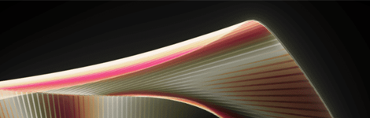

01 /
GEAVANCEERDE 11-TEGEN-11-WEDSTRIJD MOTION CAPTURE
Gegevens van twee nieuwe motioncaptureshoots van een volledige wedstrijd met profteams, waaronder een motion capture van een dameswedstrijd, voor het eerst in FIFA, en data van vijf verschillende trainingsoefeningen, leiden tot meer waarheidsgetrouwe animaties van hogere kwaliteit dan ooit tevoren in een EA SPORTS™ FIFA-titel.

02/
MACHINAAL LEREN
Vooruitgang in ons eigen hypermodern en gepatenteerd algoritme voor machinaal leren creëren meer voetbalrealisme in FIFA 23, dat leert van meer dan 9,2 miljoen frames geavanceerde motion capture van wedstrijden en dan in realtime nieuwe animaties schrijft om natuurlijke voetbalbewegingen te creëren voor allerlei interacties in FIFA 23.
AUTHENTIEKE BEWEGINGEN VAN HET HELE TEAM
Gegevens die rechtstreeks vanaf het veld zijn vastgelegd van zowel een heren- als dameswedstrijd leiden tot een gecombineerd totaal van meer dan 6000 door HyperMotion mogelijk gemaakte animaties die de spelers in FIFA 23 beter en meer realistisch laten reageren bij het bewegen en spelen dan ooit te tevoren.
DE DAMESWEDSTRIJD AANDRIJVEN
Gegevens die rechtstreeks vanaf het veld zijn vastgelegd van zowel een heren- als dameswedstrijd leiden tot een gecombineerd totaal van meer dan 6000 door HyperMotion mogelijk gemaakte animaties die de spelers in FIFA 23 beter en meer realistisch laten reageren bij het bewegen en spelen dan ooit te tevoren.